The Wood's props, set right
The user, 2026-11-14: "lets look at all props one by one and make the correct". Every kind of prop on these ten floors was drawn on its own beside the hero
(the sheets at the bottom), every floor was walked by a probe that checks each placed part against the ground, the other props, the cover, the roads and the floor's
spots (pipeline/tools/props-probe.js), and every fault below was fixed at its cause, so every floor gets the fix. Nothing that was right was moved:
the scenes, packs, doors and quests stand where they stood (table below).
The faults and the fixes
The Elder tree: roots sideways
floors 11-20, 8 roots each
Wrong: The great roots round the Elder leaned north or south whatever side of the trunk they stood on: from most sides they looked like fallen poles across its foot.
Cause: woodZone.ts: the lean was not turned to the trunk.
Fix: Each root stands on its own ground and leans in to the trunk.
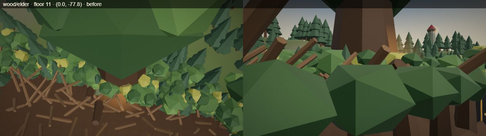
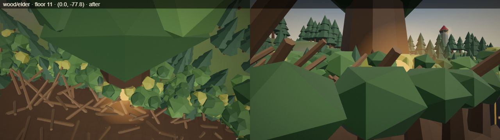
The Elder's glowing heart
floors 11-20
Wrong: The glowing heart was inside the trunk: only its glow showed.
Cause: woodZone.ts: 4.4 m out on a trunk 6.3 m wide.
Fix: It sits half out of the trunk's face towards the wood.
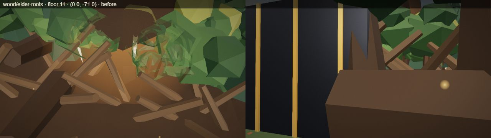
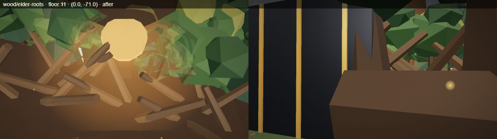
The hollow oak's roots
floors 12-20, 6 roots each
Wrong: Its roots stuck out sideways from the trunk like poles.
Cause: woodZone.ts: the same lean as the Elder's.
Fix: They flare from its foot and lean in to the trunk.
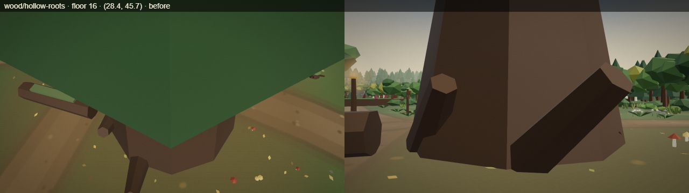
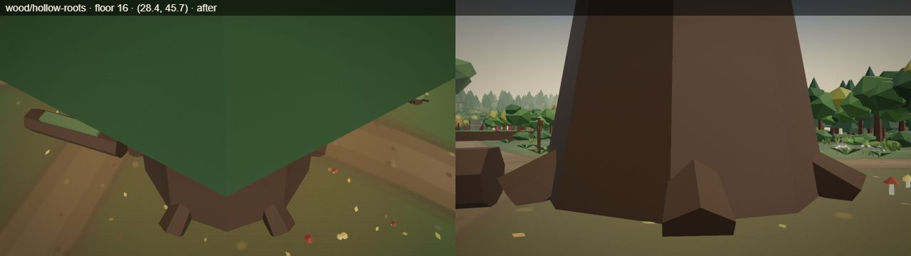
Standing stones: the gold band square to the world
floors 11-20, every standing stone
Wrong: The stone was turned and leaned, its gold band was not: gold triangles stuck out of its sides.
Cause: woodZone.ts.
Fix: The band turns and leans with its stone.
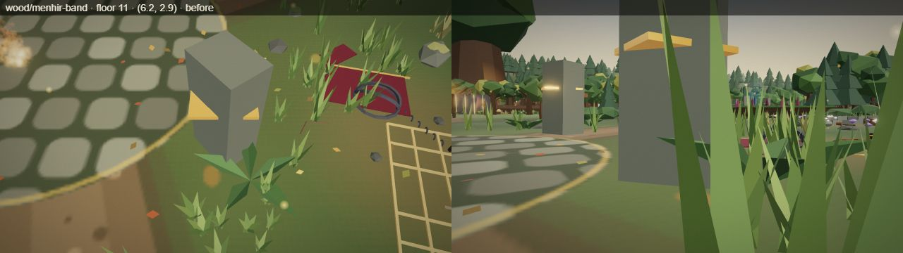
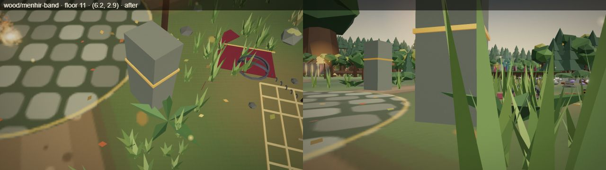
Crates: the gold band square to the world
floors 11-20
Wrong: As on the Sea.
Cause: woodZone.ts.
Fix: The band turns with its crate.
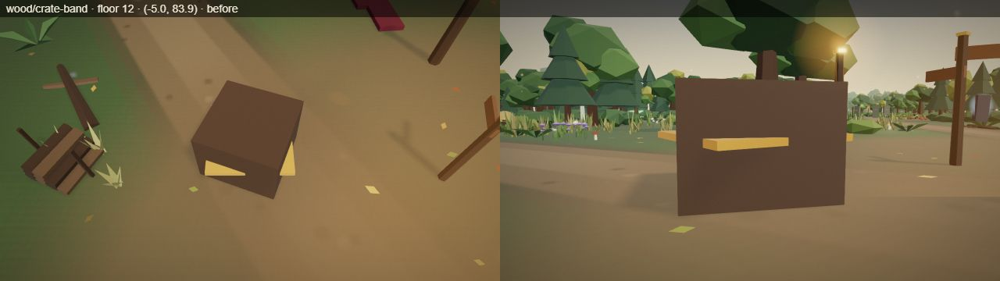
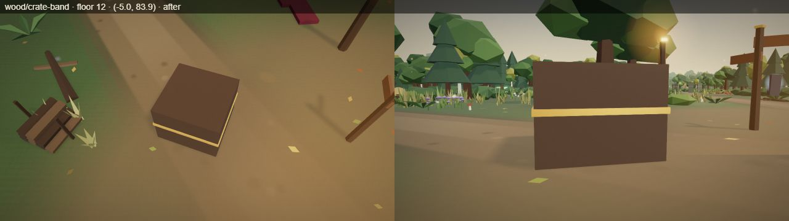
The burners' hut: a ridge on a peaked roof
floors 12-20
Wrong: The roof is a four-sided peak, but a long gold ridge ran along it: it stuck out of the roof's slopes in the air.
Cause: woodZone.ts: a ridge for a gabled roof.
Fix: A small gold cap on the peak.
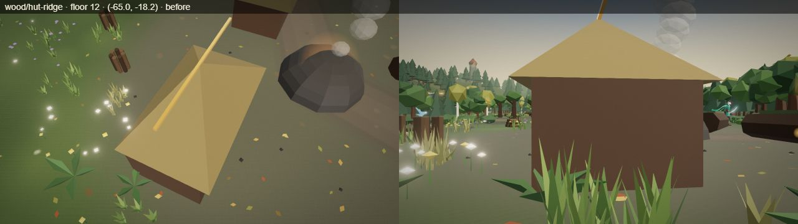
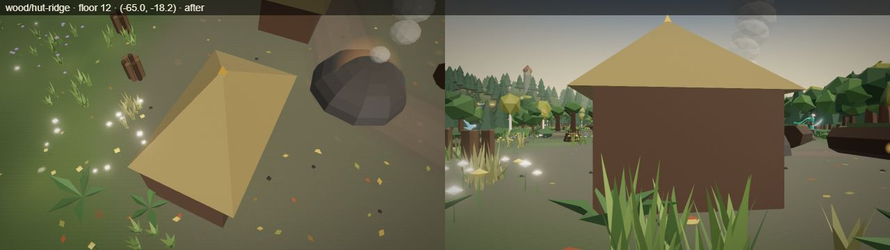
Glade lanterns on the trail
floors 11-20, 21 lanterns
Wrong: The lantern post at each glade's rim stood on the trail into it.
Cause: woodZone.ts: always towards the middle.
Fix: Turned along the rim until it stands off the trails, the spots and the cover.
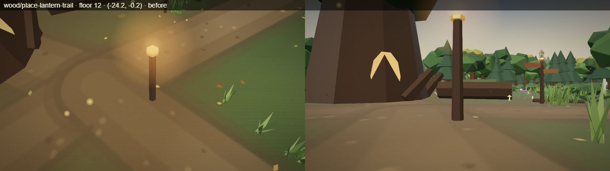
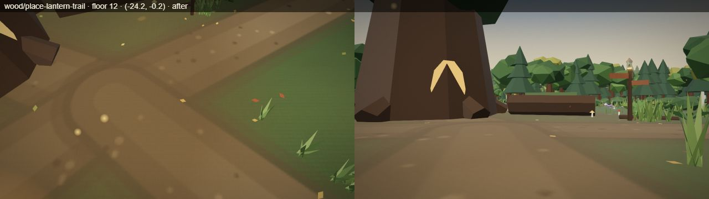
The camp's cooking tripod
floors 11-20
Wrong: Its three legs leaned sideways and never met; the pot hung in the air under nothing.
Cause: woodDepth.ts: the legs' lean was turned the wrong way.
Fix: The legs lean in and meet over the pot, which hangs from them on a chain.
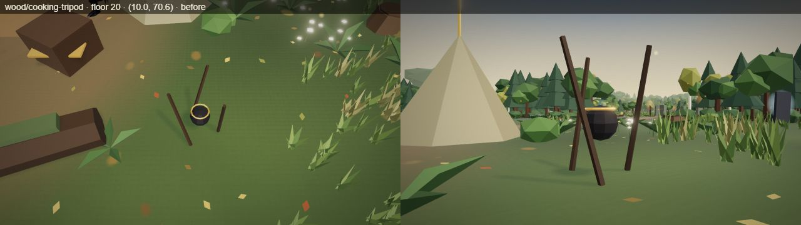
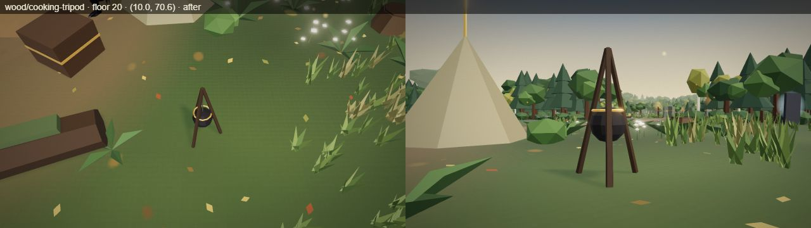
Berries beside the bramble shoots
floors 11-16, 47 berries
Wrong: The berries floated in the air beside the shoots.
Cause: woodDepth.ts: placed at random near them.
Fix: Each berry is on its shoot.
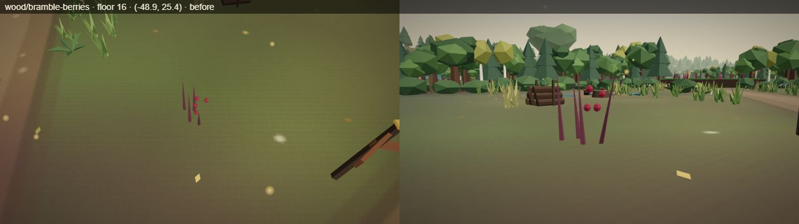
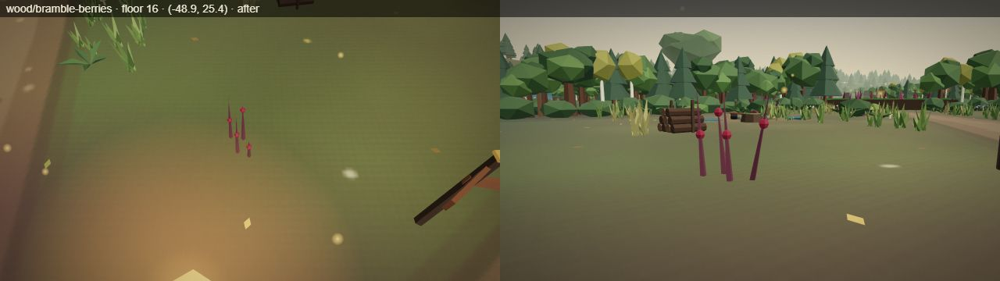
The hunter's stand: rails off the posts
floors 11-20
Wrong: The top rails hung 5 cm outside the posts.
Cause: woodDepth.ts.
Fix: The rails sit on the posts.
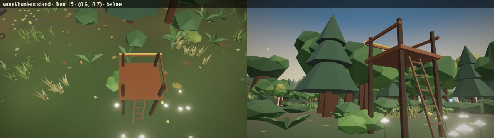
Trees through the woodcutter's cottage
floors 11-20, 8 trees
Wrong: Trees of the far wood stood through the cottage; on the hills its plinth had a side in the air.
Cause: woodDepth.ts / woodZone.ts: the wood was planted without it.
Fix: A tree in the cottage (or the watchtower) is left out of the drawing; the plinth reaches the lowest ground.
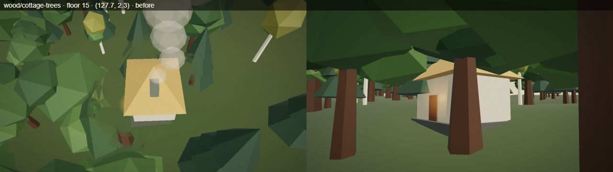
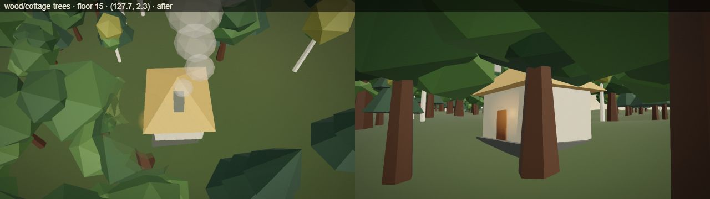
Trees through the watchtower
floors 12-16, 4 trees
Wrong: As above, at the watchtower on the ridge.
Cause: As above.
Fix: As above.
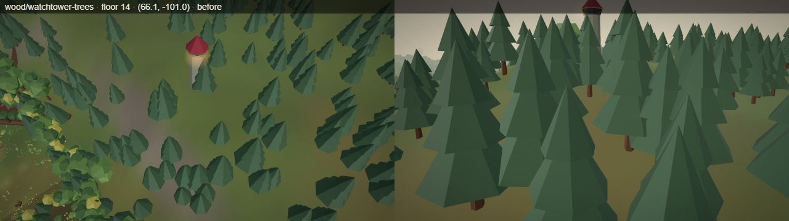
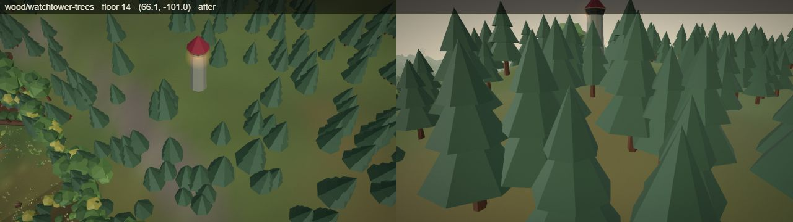
The woodshed: its roof the wrong way; scenes past the outline on a slope
floors 11-19
Wrong: The shed's roof sloped up over its short front posts and down to the tall back ones, so it stood off its posts and its gilt edge hung under it. And each part of a scene past the outline stood on the ground under its own middle, so on the hills a part stood off the one it sits on.
Cause: scenes/wood.ts: the roof's lean had the wrong sign; each part on its own ground.
Fix: The roof slopes down to the front posts. The scene is laid as one piece on the plane of its ground (8 degrees at most) and let down until none of its feet is in the air; small loose things keep their own ground.
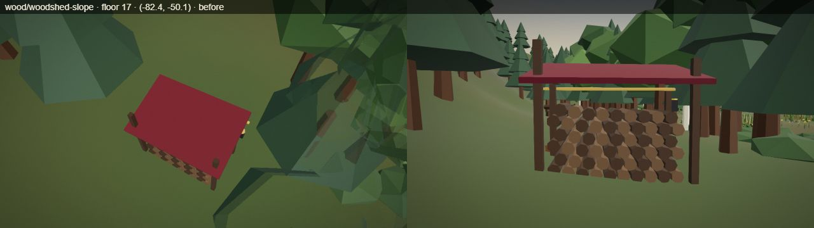
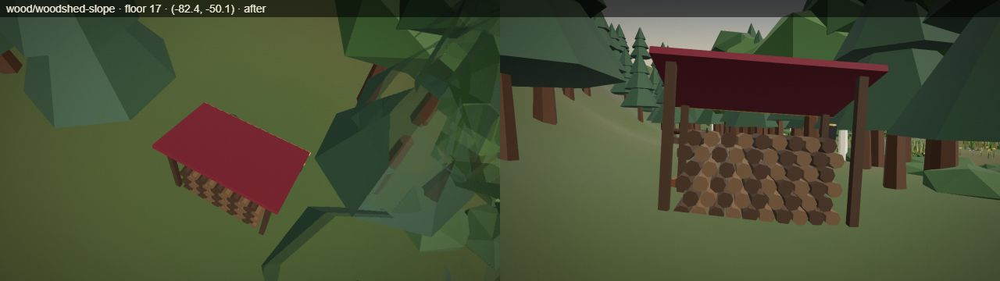
Standing stones on the trail (left)
floors 11-20
Wrong: Some cover (standing stones, rocks, logs) stands on a painted trail. The lantern beside it moved off; the gold band was fixed; the stones are the floor's cover and stay.
Cause: The floor's layout.
Fix: Left (the lantern and the band fixed).
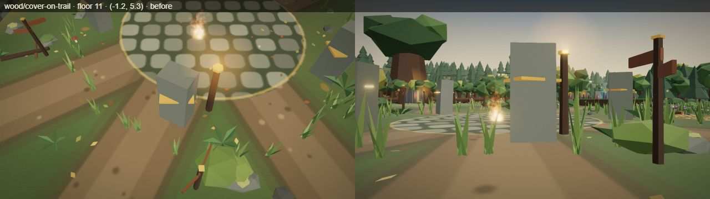
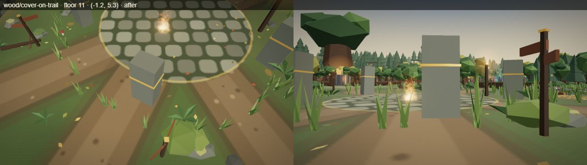
Also fixed
Seen and left
- The Wood's trail lanterns. woodDepth.ts has lanterns for the trails, but they ask for 3 m of room off the trail while standing at 2.8 m, so none is ever placed on any floor. Nothing to see; left (placing them would add props).
- Cover on the trails. Standing stones, rocks, logs, mounds and crates of the floor's cover stand on painted trails on most floors. They are the fights' layout: left.
- The Elder's root mound. Behind the lair a mound of bark with roots poking out of it in every direction; they cross the trees round it. Looks rough but is a mound of roots: left.
- zoneWood.ts. The old 48 m wood (zoneWood.ts) is no longer used by any floor: not looked at.
The probe, before and after
Counts over the ten floors. What is left is mostly by design: plinths and roots sunk into the ground ("sunk"), cover drawn on the roads ("road"), a pile of rocks ("overlap"), the side of a house's wall above its now deep plinth ("side"), parts of one prop the probe counts apart (the Elder's crown, a long jetty's deck).
| kind | before | after |
|---|---|---|
| apart | 64 | 0 |
| buried | 7 | 0 |
| float | 30 | 30 |
| overlap | 81 | 81 |
| road | 121 | 98 |
| side | 288 | 310 |
| sunk | 136 | 128 |
| tree | 208 | 162 |
Nothing else moved
Every vertex the floor draws, in 4 m squares, on the base and on the branch (pipeline/tools/props-same.js): only the squares with a fixed prop change.
The scenes (kind and place), the packs and the doors are the same.
| floor | scenes | scenes in place | packs and doors the same | 4 m squares changed |
|---|---|---|---|---|
| 11 | 44 | yes | yes | 78 of 4124 |
| 12 | 49 | yes | yes | 94 of 4256 |
| 13 | 45 | yes | yes | 89 of 4220 |
| 14 | 39 | yes | yes | 94 of 4230 |
| 15 | 44 | yes | yes | 98 of 4218 |
| 16 | 49 | yes | yes | 103 of 4295 |
| 17 | 57 | yes | yes | 91 of 4214 |
| 18 | 44 | yes | yes | 91 of 4203 |
| 19 | 45 | yes | yes | 94 of 4300 |
| 20 | 50 | yes | yes | 84 of 4193 |
The scenes' own probe
pipeline/tools/scenes-probe.js on all twenty floors after the fixes: 0 hits on every floor (spots 3 m, roads, cover, places, flats, the outline), every scene kind placed.
The route bot
| floor | result | game time | falls | restarts |
|---|---|---|---|---|
| 11 | cleared | 1025 s | 1 | 0 |
| 20 | cleared | 1306 s | 0 | 0 |
Speed
perf.py, the base (a git worktree) and the branch, twice each, in turn. Frame time median in ms (and draw calls).
| scene | profile | base | branch |
|---|---|---|---|
| world-2 (floor 11) | desktop | 10.2 / 9.5 ms, 218 calls | 9.1 / 9.7 ms, 218 calls |
| world-2 (floor 11) | phone-4x | 30.7 / 23.9 ms, 224 calls | 27.1 / 22.5 ms, 225 calls |
Same fights: prints d096aa04 (floor 1) and 467f6a06 (floor 11) on both. Triangles 658k -> 657k (floor 1), 568k/586k the same (floor 11).
Every kind, on its own
Each kind (the line of code that placed it, a scene, a harbour prop) alone on the floor's ground, the hero beside it: the game's camera and low beside it. Sheets marked "before" are of kinds only drawn there (taken before the fixes).
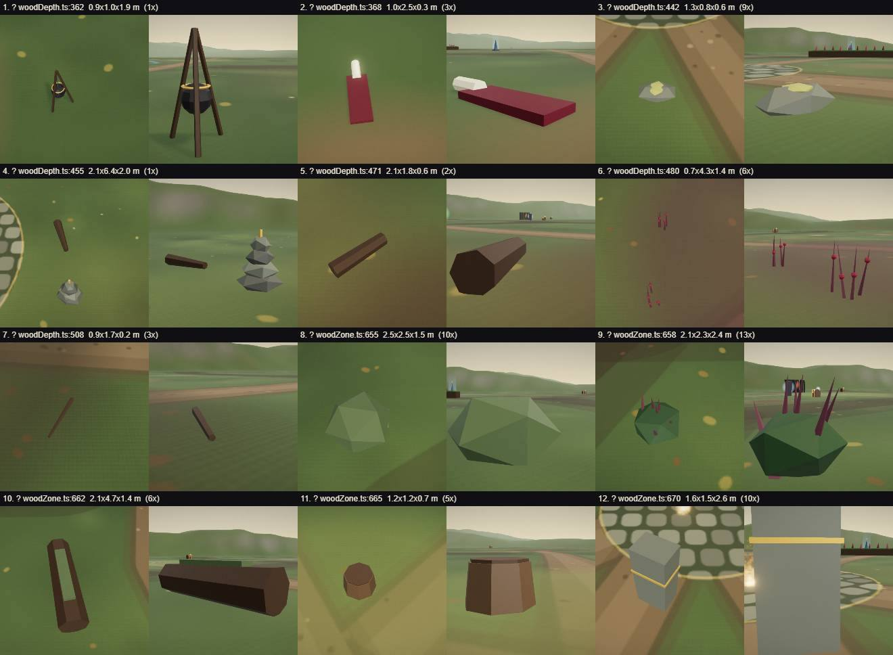
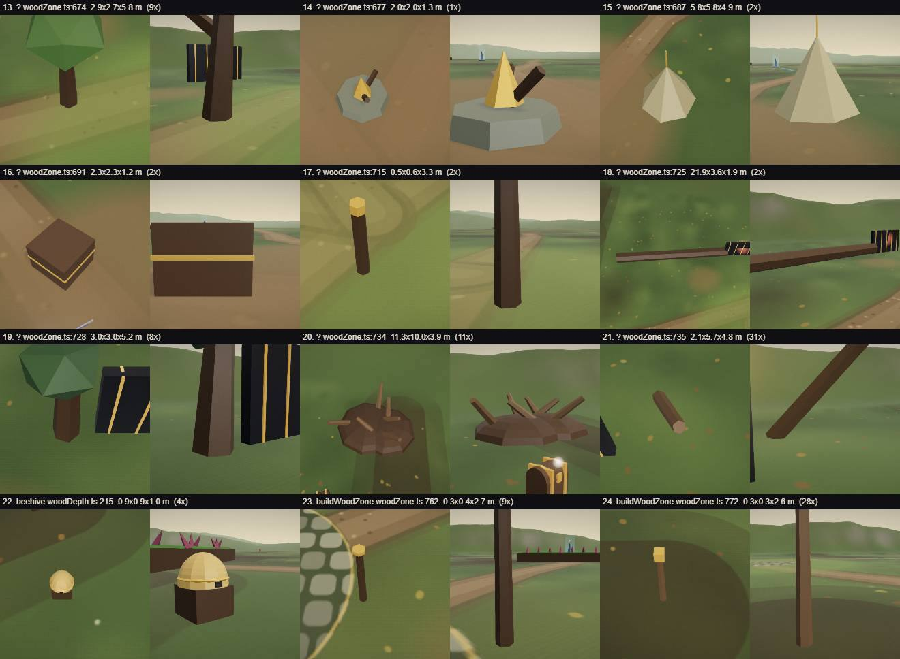
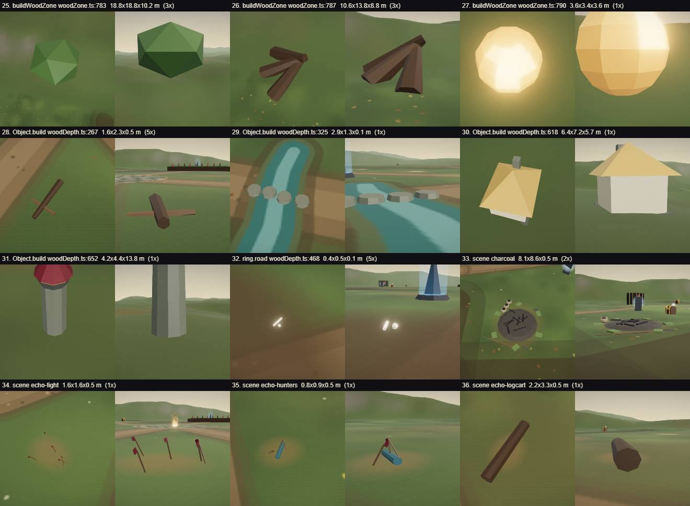
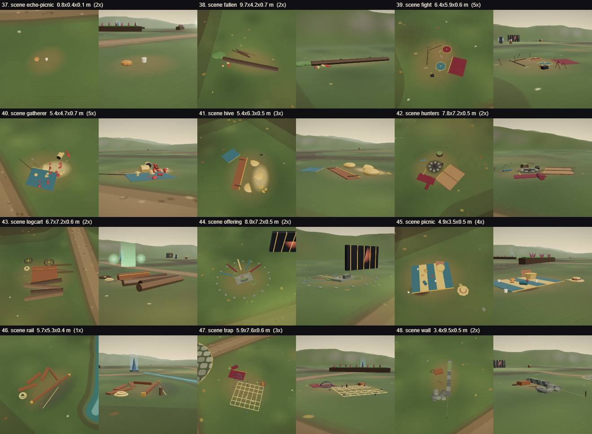
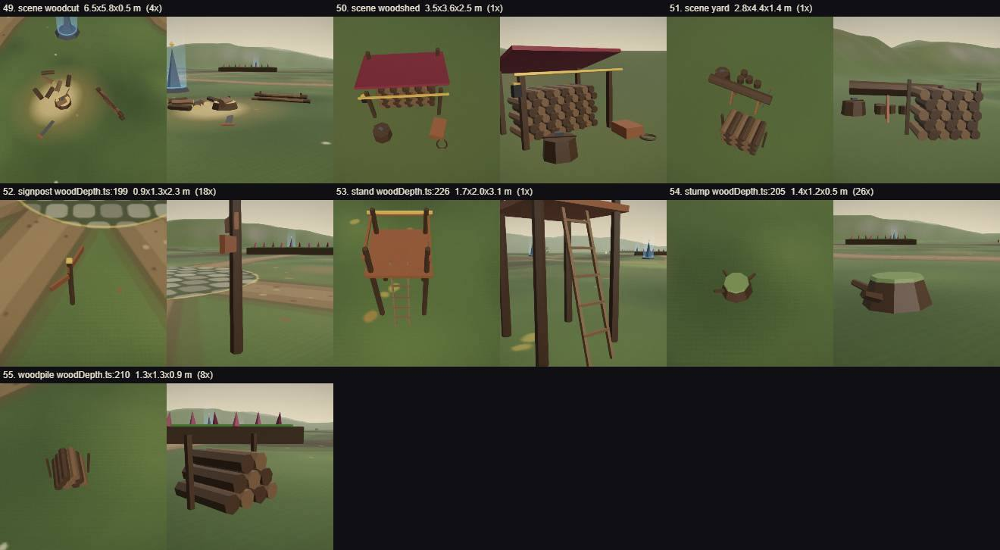
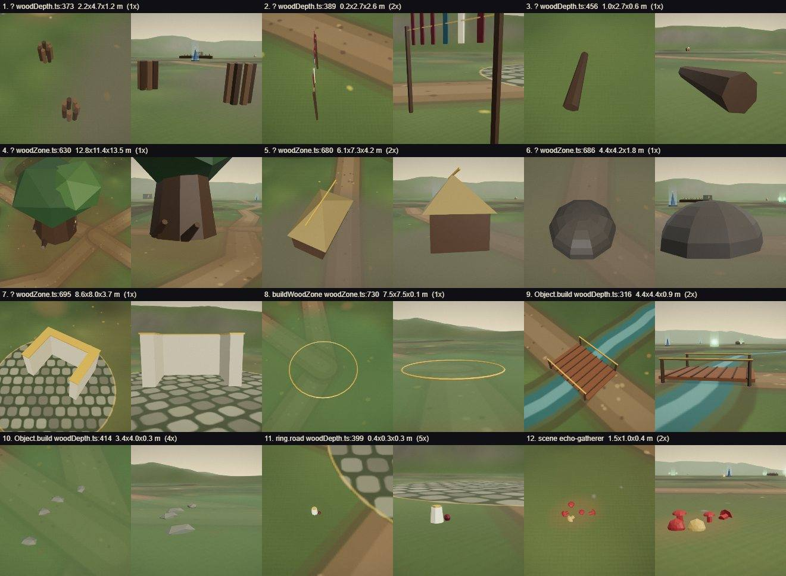
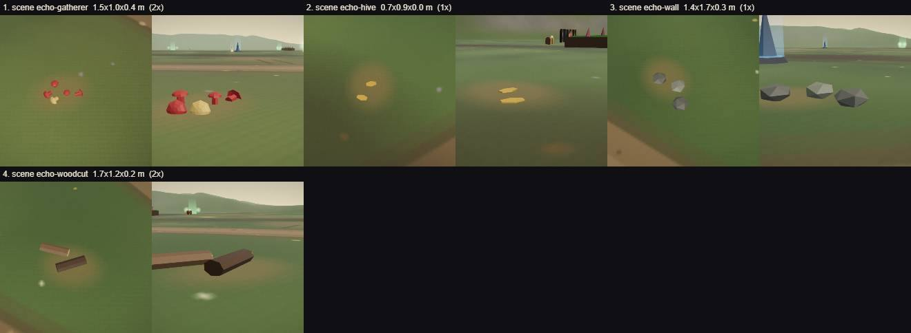
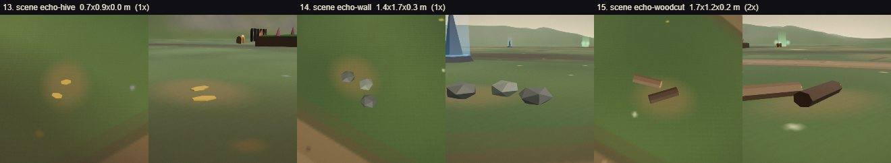
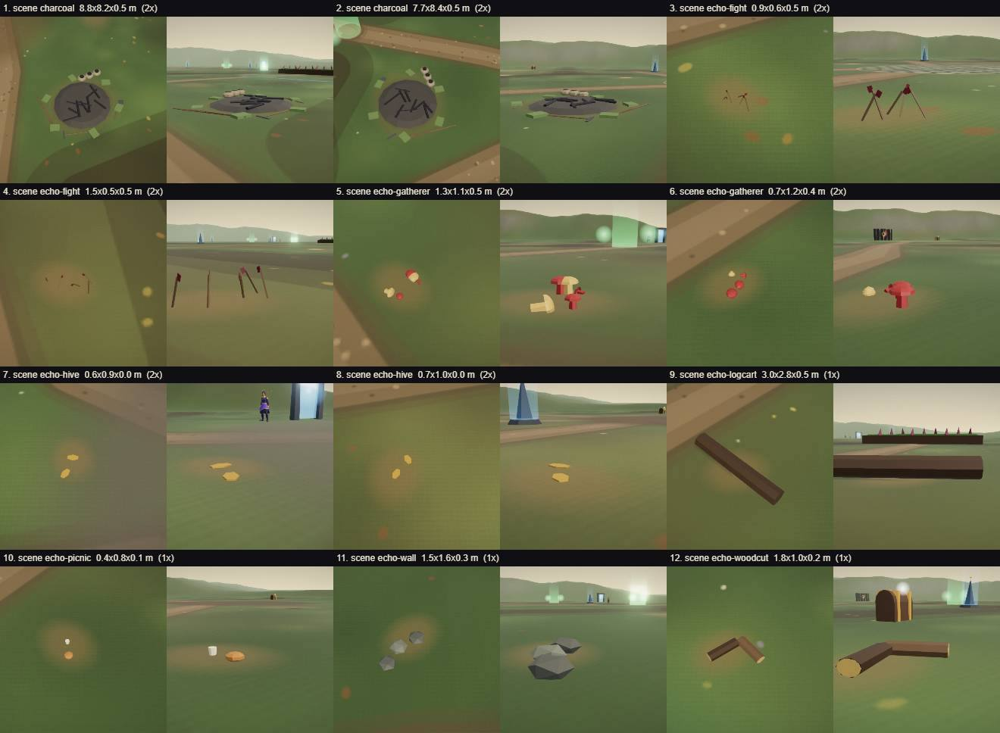
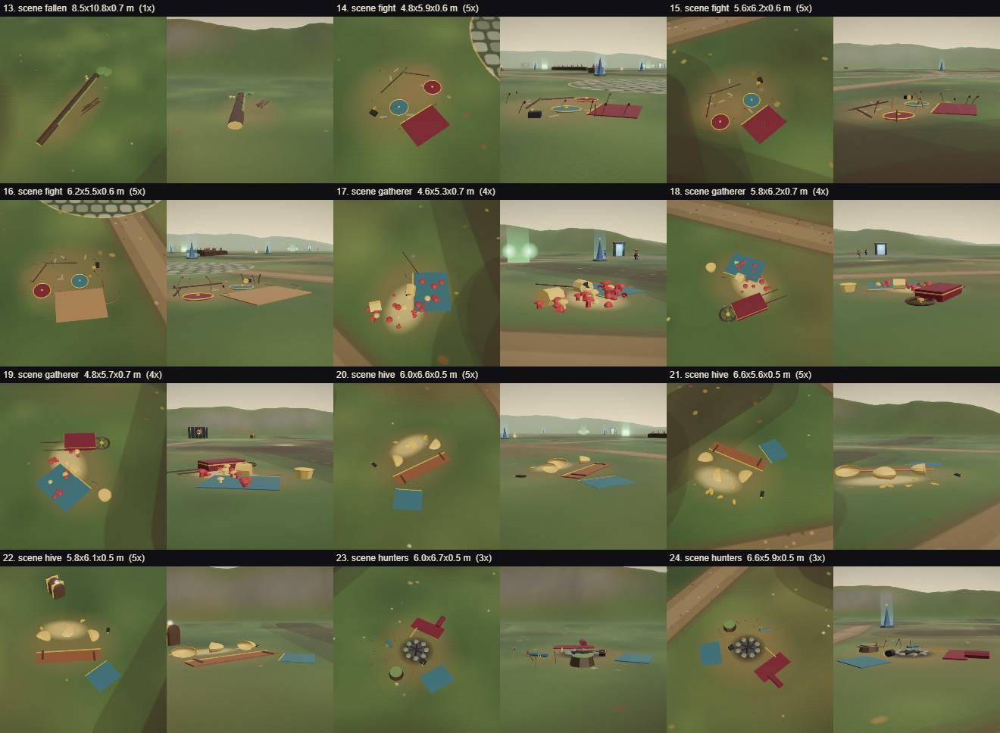
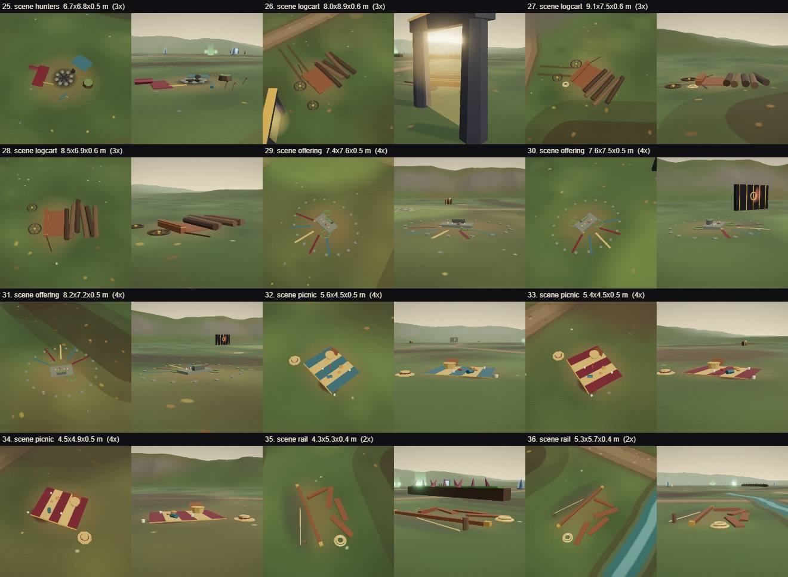
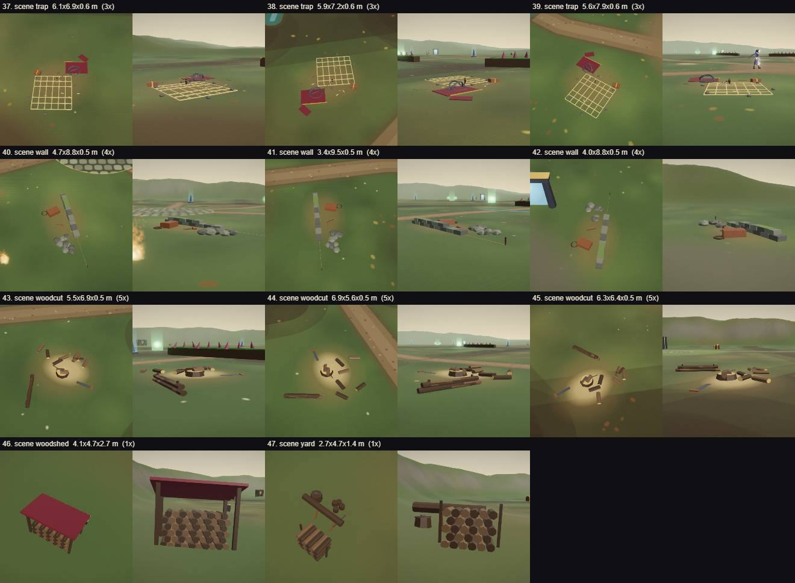
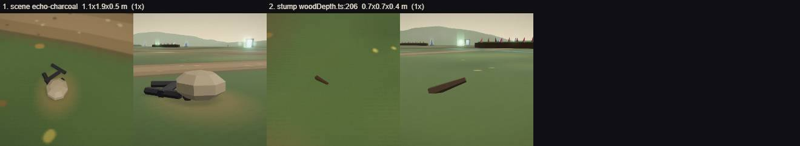